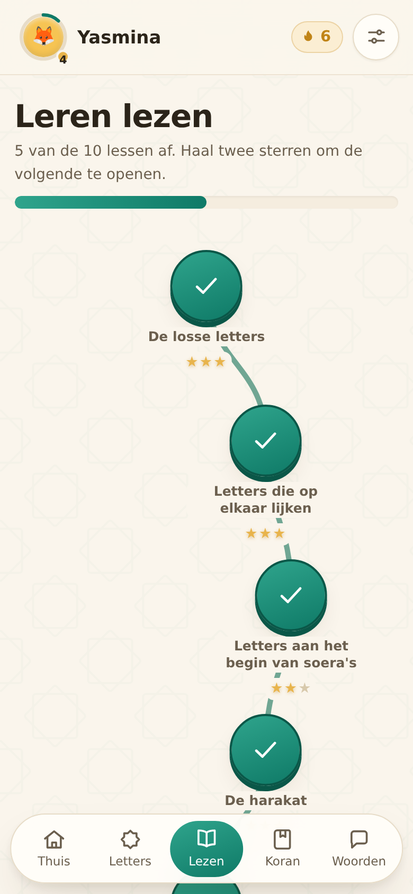
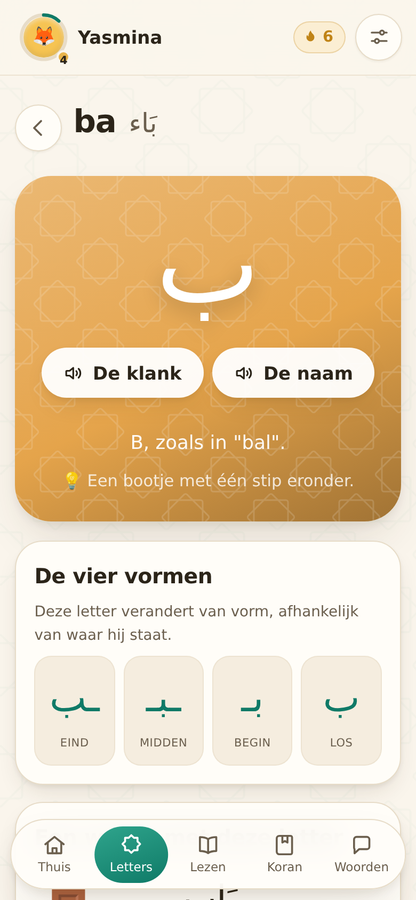
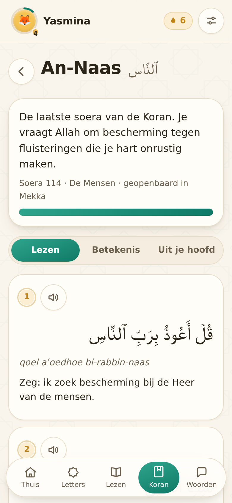
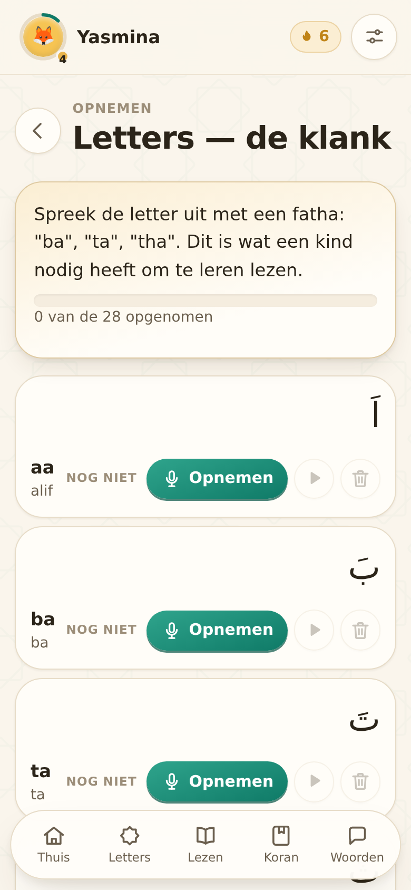

Een uur per week in de klas is te weinig om te leren lezen. Noer is de app waarmee kinderen thuis tien minuten per dag doorgaan — met dezelfde opbouw als jullie eigen lessen: de Qaida Noeraniyah, van losse letter tot vloeiend lezen.
Tien lessen in de volgorde van de Qaida: losse letters, harakat, tanween, madd, leen, soekoen, sjadda, en dan alles door elkaar. Een les gaat pas open als de vorige zit.
In de opnamestudio spreekt de leerkracht de letters en aya's zelf in. De kinderen horen thuis de stem die ze in de klas ook horen — geen computerstem.
Geen appwinkel, geen installatie, geen account voor het kind. Een link openen en op het beginscherm zetten. Werkt daarna ook zonder internet.
Zestig kinderen voor € 295 per jaar — € 4,92 per kind. Eén factuur op naam van de school, geen abonnementen die ouders zelf moeten regelen, en een afspraak om de leerkrachten er een uur mee wegwijs te maken.




Eerst proberen Het hele alfabet, de eerste twee leeslessen en drie soera's zijn gratis, zonder account. Laat het de leerkrachten een week gebruiken voordat jullie iets beslissen.